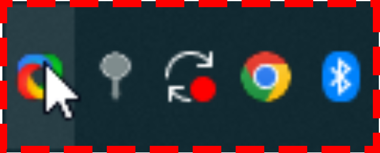
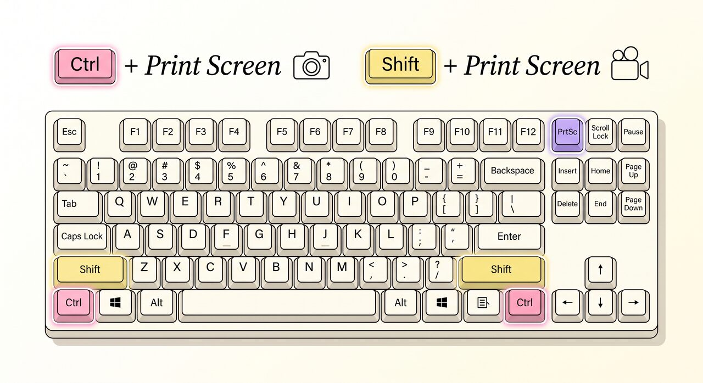
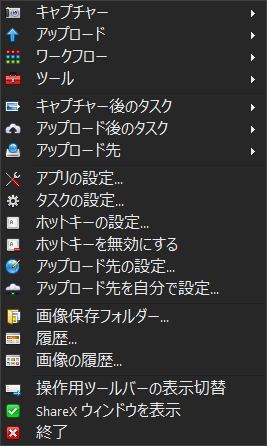
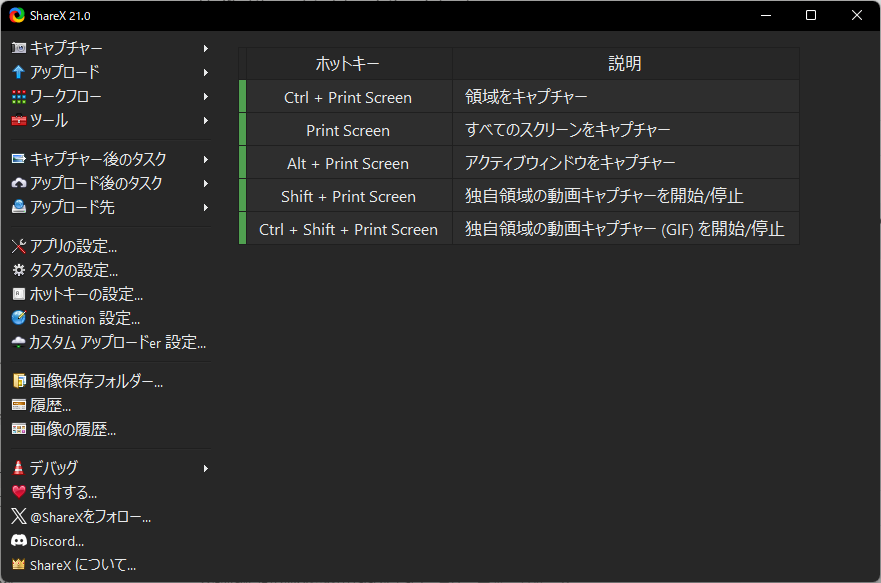
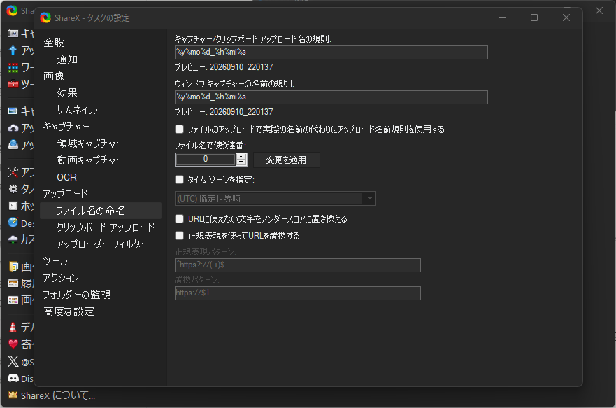

🖱️
左クリック 1回
いきなり撮影モードになります！

⚠️ 設定中はここを押さない！
もし撮影モードになっちゃったら、Escキーでキャンセルできます。
超初心者向け・所要時間 約10分
覚えるキーは2つ。
設定はたった2か所。
AIに画面を見せる。資料を切り取る。エラーを共有する。
スクショは、AI時代の基本操作。
だから、スクショを最強にラクにする。

この2つだけ覚えればOK。
同じタスクバーアイコンでも、クリックの仕方で動作が全然ちがいます。
ここだけ先に押さえておけば、もう迷いません。
いきなり撮影モードになります！

⚠️ 設定中はここを押さない！
もし撮影モードになっちゃったら、Escキーでキャンセルできます。
縦長のメニューが開きます。

このメニューから、あとで出てくるSTEP 1の設定に進みます。
大きな設定画面が開きます。

この画面から、あとで出てくるSTEP 2の設定に進みます。
ここだけ覚えて！
まず、この2つだけ覚えよう
📸 スクリーンショット
撮りたい場所を選んでスクショ！
🎥 画面録画
画面録画スタート！
もう一度押すと終了
STEP 1
「撮った画像、どこ行った問題」を消そう。
ShareXアイコンを右クリック
「キャプチャー後のタスク」にマウスを合わせる
「エクスプローラーでファイルを表示」にチェック
STEP 2
ファイル名まで、ShareXにやってもらおう。
📁 完成形はこんな感じ
20260910_204231.png
20260910_204305.png
20260910_204418.png
名前を考えなくても、撮った日時で自動保存。
ShareXアイコンをダブルクリック
左メニューの「タスクの設定...」（⚙️歯車）をクリック
左側「アップロード」の中の「ファイルの命名」を選択
「キャプチャー/クリップボード アップロード名の規則」の入力欄を探す
下のコードを貼り付ける

%y%mo%d_%h%mi%s
迷ったら、これをコピーして貼り付けるだけでOK。
%y → 年%mo → 月%d → 日%h → 時%mi → 分%s → 秒ShareXはバージョンによって画面のデザインや表記が少し異なることがあります。 今回の案内は現行の ShareX v21 系を基準にしています。 項目名が完全一致しない場合は、似た名前（「ファイル名」「書式」「Naming」など）の欄を探してみてください。
設定できた！
📸 スクリーンショット
📁 ShareX保存フォルダ
もう保存場所を探さない。
もうファイル名を考えない。
🎉 SETUP COMPLETE!
Ctrl + Print Screen
スクショ
Shift + Print Screen
録画
撮影後
保存フォルダが自動で開く
ファイル名
日時で自動生成
たった2つの設定で、
スクショがめちゃくちゃラクになりました。
おまけ
もっと知りたい人だけどうぞ。
Shift + Print Screen
長いWebページも1枚に
画像の文字を読み取る
矢印・文字・ぼかしなど
画像を画面に固定